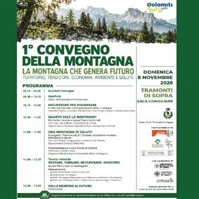

dom 8 nov · dalle 09:15
1° Convegno della Montagna
La montagna che genera futuro. Territorio, tradizioni, economia, ambiente e salute. A Tramonti di Sopra un’intera mattinata dedicata al presente e al futuro della montagna, con esperti, ricercatori e realtà del territorio. Programma: - Apertura, saluti istituzionali e…
 Indicazioni
Indicazioni
- Costi e prenotazioni
- Costo non indicato · Prenotazione non indicata
- Programma
- Programma da verificare. Apri la fonte ufficiale per orari e possibili aggiornamenti.
- In caso di maltempo
- Nessuna indicazione specifica pubblicata.
- Note
- Acquisito automaticamente dalla fonte.
L’EVENTO
Descrizione completa
La montagna che genera futuro.
Territorio, tradizioni, economia, ambiente e salute.
A Tramonti di Sopra un’intera mattinata dedicata al presente e al futuro della montagna, con esperti, ricercatori e realtà del territorio.
Programma:
- Apertura, saluti istituzionali e introduzione
- 𝗥𝗘𝗖𝗨𝗣𝗘𝗥𝗔𝗥𝗘 𝗣𝗘𝗥 𝗥𝗜𝗚𝗘𝗡𝗘𝗥𝗔𝗥𝗘. Il cibo tradizionale come patrimonio della montagna, con Daniela Doretto, membro del direttivo Slow Food Condotta del Pordenonese
- 𝗤𝗨𝗔𝗡𝗧𝗢 𝗩𝗔𝗟𝗘 𝗟𝗔 𝗠𝗢𝗡𝗧𝗔𝗚𝗡𝗔? Economia, risorse e nuove filiere territoriali, con la Prof.ssa Ivana Bassi, Università di Udine, Dipartimento Scienze agroalimentari, ambientali e animali
- 𝗨𝗡𝗔 𝗠𝗢𝗡𝗧𝗔𝗚𝗡𝗔 𝗗𝗜 𝗦𝗔𝗟𝗨𝗧𝗘. Il progetto “ConnaturALP”, foreste, ecosistemi montani, benessere e salute, con la Prof.ssa Bruna Scaggiante, Università di Trieste, Dipartimento Scienze della Vita. A seguire forestoterapia e nuove forme di turismo, con la Dott.ssa Camilla Costa, libera professionista, innovazione della montagna
- 𝗧𝗮𝘃𝗼𝗹𝗮 𝗿𝗼𝘁𝗼𝗻𝗱𝗮 - 𝗥𝗘𝗦𝗧𝗔𝗥𝗘. 𝗧𝗢𝗥𝗡𝗔𝗥𝗘. 𝗥𝗘𝗖𝗨𝗣𝗘𝗥𝗔𝗥𝗘. 𝗜𝗡𝗩𝗘𝗦𝗧𝗜𝗥𝗘. Quale futuro per la montagna? Intervengono amministratori locali e regionali, i relatori del convegno, il Dott. Giuseppe Ragogna, giornalista e scrittore di montagna, e la Dott.ssa Raffaella Petris, Cooperativa di montagna Cramars
- 𝗗𝗔𝗟𝗟𝗔 𝗠𝗘𝗠𝗢𝗥𝗜𝗔 𝗔𝗟 𝗙𝗨𝗧𝗨𝗥𝗢
Ingresso gratuito fino a esaurimento dei posti disponibili. Iscrizioni dalle ore 9:15. Inizio convegno ore 9:30.
Organizzazione e coordinamento scientifico a cura di 𝗖𝗮𝗺𝗶𝗹𝗹𝗮 𝗖𝗼𝘀𝘁𝗮.
Con il contributo di 𝗙𝗼𝗻𝗱𝗮𝘇𝗶𝗼𝗻𝗲 𝗗𝗼𝗹𝗼𝗺𝗶𝘁𝗶 𝗨𝗡𝗘𝗦𝗖𝗢, 𝗠𝗮𝗴𝗻𝗶𝗳𝗶𝗰𝗮 𝗖𝗼𝗺𝘂𝗻𝗶𝘁𝗮̀ 𝗱𝗶 𝗠𝗼𝗻𝘁𝗮𝗴𝗻𝗮, 𝗘𝗰𝗼𝗺𝘂𝘀𝗲𝗼 𝗟𝗶𝘀 𝗔𝗴𝗮𝗻𝗶𝘀 𝗔𝗣𝗦, 𝗥𝗲𝗴𝗶𝗼𝗻𝗲 𝗔𝘂𝘁𝗼𝗻𝗼𝗺𝗮 𝗙𝗿𝗶𝘂𝗹𝗶 𝗩𝗲𝗻𝗲𝘇𝗶𝗮 𝗚𝗶𝘂𝗹𝗶𝗮
Con il patrocinio di 𝗨𝗻𝗶𝘃𝗲𝗿𝘀𝗶𝘁𝗮̀ 𝗱𝗲𝗴𝗹𝗶 𝗦𝘁𝘂𝗱𝗶 𝗱𝗶 𝗨𝗱𝗶𝗻𝗲, 𝗨𝗻𝗶𝘃𝗲𝗿𝘀𝗶𝘁𝗮̀ 𝗱𝗲𝗴𝗹𝗶 𝗦𝘁𝘂𝗱𝗶 𝗱𝗶 𝗧𝗿𝗶𝗲𝘀𝘁𝗲, 𝗖𝗿𝗮𝗺𝗮𝗿𝘀
IL PROGRAMMA
Programma e orari
Appuntamenti raccolti dalle fonti elencate. Dove manca un orario, non è ancora disponibile in questa scheda.
Programma pubblicato
- Dal 2026-11-08 al 2026-11-08
INFORMAZIONI UTILI
Prima di partire
- Controllare la fonte prima di partire.
ORGANIZZAZIONE